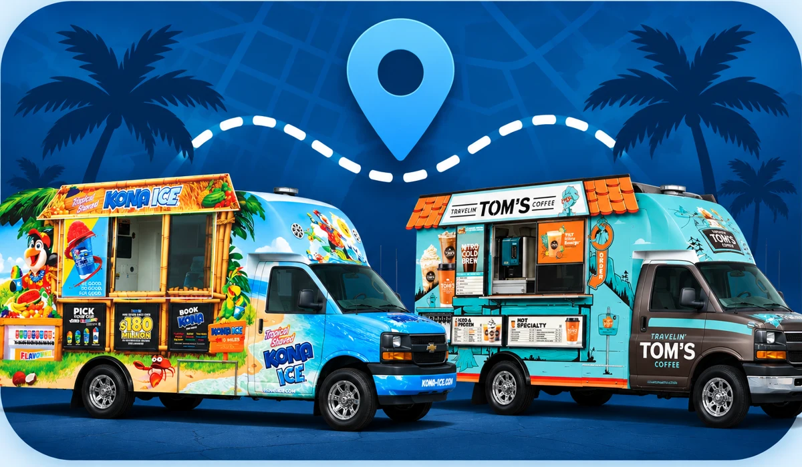

Get driving directions
Choose a starting location and paste your destination.
Google Maps calculates the live route and travel time. Toll avoidance is requested, but verify the selected route in Google Maps.

FIELD OPERATIONS
Plan your day. Find your next stop.
Choose a starting location and paste your destination.
Google Maps calculates the live route and travel time. Toll avoidance is requested, but verify the selected route in Google Maps.